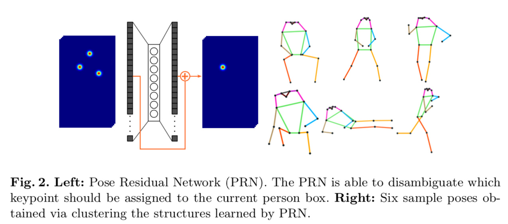

<!DOCTYPE html>
<html>
<head><meta name="generator" content="Hexo 3.9.0">
  <meta charset="utf-8">
  

  
  <title>MultiPoseNet: Fast Multi-Person Pose Estimation using Pose Residual Network | Out of Memory</title>
  <meta name="viewport" content="width=device-width, initial-scale=1, maximum-scale=1">
  <meta name="description" content="URL: https://arxiv.org/abs/1807.04067ECCV2018一篇利用bottom up方法做pose estimation的论文。论文所提出的方法主要是分别利用两个分支一个分支用来检测人体框，另一个分支用来出关键点的heatmap。然后再利用一个网络来merge 两个分支出的结果，将关键点分别映射到对应的人体框上实现多人的姿态估计。 下图是本文所提方法的大体Pipel">
<meta name="keywords" content="Landmark,BottomUp,Pose">
<meta property="og:type" content="article">
<meta property="og:title" content="MultiPoseNet: Fast Multi-Person Pose Estimation using Pose Residual Network">
<meta property="og:url" content="http://yoursite.com/2018/12/24/MultiPoseNet-Fast-Multi-Person-Pose-Estimation-using-Pose-Residual-Network/index.html">
<meta property="og:site_name" content="Out of Memory">
<meta property="og:description" content="URL: https://arxiv.org/abs/1807.04067ECCV2018一篇利用bottom up方法做pose estimation的论文。论文所提出的方法主要是分别利用两个分支一个分支用来检测人体框，另一个分支用来出关键点的heatmap。然后再利用一个网络来merge 两个分支出的结果，将关键点分别映射到对应的人体框上实现多人的姿态估计。 下图是本文所提方法的大体Pipel">
<meta property="og:locale" content="zh-CN">
<meta property="og:image" content="http://yoursite.com/2018/12/24/MultiPoseNet-Fast-Multi-Person-Pose-Estimation-using-Pose-Residual-Network/MultiPoseNet-Fast-Multi-Person-Pose-Estimation-using-Pose-Residual-Network-b80970b3e1b91db9992796fdada5d5cacddc1531.jpg">
<meta property="og:image" content="http://yoursite.com/2018/12/24/MultiPoseNet-Fast-Multi-Person-Pose-Estimation-using-Pose-Residual-Network/MultiPoseNet-Fast-Multi-Person-Pose-Estimation-using-Pose-Residual-Network-a42ffc7c2d336f7a095fc898d260ef90c728a7f6.png">
<meta property="og:image" content="http://yoursite.com/2018/12/24/MultiPoseNet-Fast-Multi-Person-Pose-Estimation-using-Pose-Residual-Network/MultiPoseNet-Fast-Multi-Person-Pose-Estimation-using-Pose-Residual-Network-96f37d11a64105bce2440ed6b6955231dd1a6949.png">
<meta property="og:image" content="http://yoursite.com/2018/12/24/MultiPoseNet-Fast-Multi-Person-Pose-Estimation-using-Pose-Residual-Network/MultiPoseNet-Fast-Multi-Person-Pose-Estimation-using-Pose-Residual-Network-c340c5ea72c9c75d031dbcba3c8b569d4e393023.jpg">
<meta property="og:image" content="http://yoursite.com/2018/12/24/MultiPoseNet-Fast-Multi-Person-Pose-Estimation-using-Pose-Residual-Network/MultiPoseNet-Fast-Multi-Person-Pose-Estimation-using-Pose-Residual-Network-9255a515da09097264bb0c17a00cd420a3a16291.png">
<meta property="og:image" content="http://yoursite.com/2018/12/24/MultiPoseNet-Fast-Multi-Person-Pose-Estimation-using-Pose-Residual-Network/MultiPoseNet-Fast-Multi-Person-Pose-Estimation-using-Pose-Residual-Network-d87795e947cb3e80cf5311605ec05df40db408f6.png">
<meta property="og:updated_time" content="2019-11-17T16:18:17.046Z">
<meta name="twitter:card" content="summary">
<meta name="twitter:title" content="MultiPoseNet: Fast Multi-Person Pose Estimation using Pose Residual Network">
<meta name="twitter:description" content="URL: https://arxiv.org/abs/1807.04067ECCV2018一篇利用bottom up方法做pose estimation的论文。论文所提出的方法主要是分别利用两个分支一个分支用来检测人体框，另一个分支用来出关键点的heatmap。然后再利用一个网络来merge 两个分支出的结果，将关键点分别映射到对应的人体框上实现多人的姿态估计。 下图是本文所提方法的大体Pipel">
<meta name="twitter:image" content="http://yoursite.com/2018/12/24/MultiPoseNet-Fast-Multi-Person-Pose-Estimation-using-Pose-Residual-Network/MultiPoseNet-Fast-Multi-Person-Pose-Estimation-using-Pose-Residual-Network-b80970b3e1b91db9992796fdada5d5cacddc1531.jpg">
  
    <link rel="alternate" href="/atom.xml" title="Out of Memory" type="application/atom+xml">
  
  
    <link rel="icon" href="/favicon.png">
  
  
    <link href="//fonts.googleapis.com/css?family=Source+Code+Pro" rel="stylesheet" type="text/css">
  
  <link rel="stylesheet" href="/css/style.css">
</head>
</html>
<body>
  <div id="container">
    <div id="wrap">
      <header id="header">
  <div id="banner"></div>
  <div id="header-outer" class="outer">
    <div id="header-title" class="inner">
      <h1 id="logo-wrap">
        <a href="/" id="logo">Out of Memory</a>
      </h1>
      
        <h2 id="subtitle-wrap">
          <a href="/" id="subtitle">Live and Learn</a>
        </h2>
      
    </div>
    <div id="header-inner" class="inner">
      <nav id="main-nav">
        <a id="main-nav-toggle" class="nav-icon"></a>
        
          <a class="main-nav-link" href="/">Home</a>
        
          <a class="main-nav-link" href="/archives">Archives</a>
        
      </nav>
      <nav id="sub-nav">
        
          <a id="nav-rss-link" class="nav-icon" href="/atom.xml" title="RSS Feed"></a>
        
        <a id="nav-search-btn" class="nav-icon" title="搜索"></a>
      </nav>
      <div id="search-form-wrap">
        <form action="//google.com/search" method="get" accept-charset="UTF-8" class="search-form"><input type="search" name="q" class="search-form-input" placeholder="Search"><button type="submit" class="search-form-submit">&#xF002;</button><input type="hidden" name="sitesearch" value="http://yoursite.com"></form>
      </div>
    </div>
  </div>
</header>
      <div class="outer">
        <section id="main"><article id="post-MultiPoseNet-Fast-Multi-Person-Pose-Estimation-using-Pose-Residual-Network" class="article article-type-post" itemscope itemprop="blogPost">
  <div class="article-meta">
    <a href="/2018/12/24/MultiPoseNet-Fast-Multi-Person-Pose-Estimation-using-Pose-Residual-Network/" class="article-date">
  <time datetime="2018-12-24T04:40:27.000Z" itemprop="datePublished">2018-12-24</time>
</a>
    
  </div>
  <div class="article-inner">
    
    
      <header class="article-header">
        
  
    <h1 class="article-title" itemprop="name">
      MultiPoseNet: Fast Multi-Person Pose Estimation using Pose Residual Network
    </h1>
  

      </header>
    
    <div class="article-entry" itemprop="articleBody">
      
        <p>URL: <a href="https://arxiv.org/abs/1807.04067" target="_blank" rel="noopener">https://arxiv.org/abs/1807.04067</a><br>ECCV2018一篇利用bottom up方法做pose estimation的论文。论文所提出的方法主要是分别利用两个分支一个分支用来检测人体框，另一个分支用来出关键点的heatmap。然后再利用一个网络来merge 两个分支出的结果，将关键点分别映射到对应的人体框上实现多人的姿态估计。</p>
<p>下图是本文所提方法的大体Pipeline，整个pipeline可以分成三个部分，人体关键点检测、人体框检测和关键点的聚类（PRN）：<br></p>
<ul>
<li><strong>Backbone</strong>：Resnet + FPN</li>
<li><strong>关键点检测</strong>：整个分支结构如下图，比较直观，L2 loss，总共出K + 1 个heatmap，+1为seg的结果：<br></li>
<li><strong>人体框检测</strong>：就是直接上的RetinaNet<br></li>
<li><strong>Pose Residual Network (PRN)</strong>：这一部分内容是论文的核心，主要是利用人体框将关键点检测的结果映射到对应的instance上。具体做法是在关键点检测的结果上利用对应人体框的位置crop出一样大小的patch，这样就可以得到K x W x H大小的feature map，K为关键点个数，W、H为对应人体框的size，然后把这个feature map resize到固定大小(36 x 56)作为PRN的输入。那么对于上图的c、d这种同一个框有多个人关键点overlap的情况，主要是利用一个多层感知机（residual multilayer perceptron）来把人体框对应instance的关键点提取出来，具体逻辑如下图：<br><br><strong>结果：</strong><br><br></li>
</ul>
<p>这篇论文另一个比较重要的点是虽然整个网络的pipeline比较多但是inference的速度还是比较快的，对于典型的COCO图片（～3人）可以达到23FPS的速度，用来merge的PRN网络输入比较小层数也不深。</p>

      
    </div>
    <footer class="article-footer">
      <a data-url="http://yoursite.com/2018/12/24/MultiPoseNet-Fast-Multi-Person-Pose-Estimation-using-Pose-Residual-Network/" data-id="ck337q4gy00301cfy5bqk77bl" class="article-share-link">Share</a>
      
      
  <ul class="article-tag-list"><li class="article-tag-list-item"><a class="article-tag-list-link" href="/tags/BottomUp/">BottomUp</a></li><li class="article-tag-list-item"><a class="article-tag-list-link" href="/tags/Landmark/">Landmark</a></li><li class="article-tag-list-item"><a class="article-tag-list-link" href="/tags/Pose/">Pose</a></li></ul>

    </footer>
  </div>
  
    
<nav id="article-nav">
  
    <a href="/2018/12/24/Bottom-up-Pose-Estimation-of-Multiple-Person-with-Bounding-Box-Constraint/" id="article-nav-newer" class="article-nav-link-wrap">
      <strong class="article-nav-caption">Newer</strong>
      <div class="article-nav-title">
        
          Bottom-up Pose Estimation of Multiple Person with Bounding Box Constraint 
        
      </div>
    </a>
  
  
    <a href="/2018/12/19/Two-Stream-Transformer-Networks-for-Video-based-Face-Alignment/" id="article-nav-older" class="article-nav-link-wrap">
      <strong class="article-nav-caption">Older</strong>
      <div class="article-nav-title">Two-Stream Transformer Networks for Video-based Face Alignment</div>
    </a>
  
</nav>

  
</article>

</section>
        
          <aside id="sidebar">
  
    
  <div class="widget-wrap">
    <h3 class="widget-title">分类</h3>
    <div class="widget">
      <ul class="category-list"><li class="category-list-item"><a class="category-list-link" href="/categories/Algorithm/">Algorithm</a></li><li class="category-list-item"><a class="category-list-link" href="/categories/Engineering/">Engineering</a></li><li class="category-list-item"><a class="category-list-link" href="/categories/Paper-Reading/">Paper Reading</a></li></ul>
    </div>
  </div>


  
    
  <div class="widget-wrap">
    <h3 class="widget-title">标签</h3>
    <div class="widget">
      <ul class="tag-list"><li class="tag-list-item"><a class="tag-list-link" href="/tags/3D/">3D</a></li><li class="tag-list-item"><a class="tag-list-link" href="/tags/Basic/">Basic</a></li><li class="tag-list-item"><a class="tag-list-link" href="/tags/Bottom-UP/">Bottom UP</a></li><li class="tag-list-item"><a class="tag-list-link" href="/tags/BottomUp/">BottomUp</a></li><li class="tag-list-item"><a class="tag-list-link" href="/tags/Bottom-Up/">Bottom_Up</a></li><li class="tag-list-item"><a class="tag-list-link" href="/tags/Classic/">Classic</a></li><li class="tag-list-item"><a class="tag-list-link" href="/tags/Classification/">Classification</a></li><li class="tag-list-item"><a class="tag-list-link" href="/tags/DeepLab/">DeepLab</a></li><li class="tag-list-item"><a class="tag-list-link" href="/tags/Detection/">Detection</a></li><li class="tag-list-item"><a class="tag-list-link" href="/tags/Engineering/">Engineering</a></li><li class="tag-list-item"><a class="tag-list-link" href="/tags/Face/">Face</a></li><li class="tag-list-item"><a class="tag-list-link" href="/tags/Hardware/">Hardware</a></li><li class="tag-list-item"><a class="tag-list-link" href="/tags/KeyPoint/">KeyPoint</a></li><li class="tag-list-item"><a class="tag-list-link" href="/tags/Landmark/">Landmark</a></li><li class="tag-list-item"><a class="tag-list-link" href="/tags/Learning-Strategy/">Learning Strategy</a></li><li class="tag-list-item"><a class="tag-list-link" href="/tags/Loss/">Loss</a></li><li class="tag-list-item"><a class="tag-list-link" href="/tags/Mimick/">Mimick</a></li><li class="tag-list-item"><a class="tag-list-link" href="/tags/Mobile/">Mobile</a></li><li class="tag-list-item"><a class="tag-list-link" href="/tags/Mutual-learning/">Mutual learning</a></li><li class="tag-list-item"><a class="tag-list-link" href="/tags/Platform/">Platform</a></li><li class="tag-list-item"><a class="tag-list-link" href="/tags/Pose/">Pose</a></li><li class="tag-list-item"><a class="tag-list-link" href="/tags/Quantization/">Quantization</a></li><li class="tag-list-item"><a class="tag-list-link" href="/tags/Regularization/">Regularization</a></li><li class="tag-list-item"><a class="tag-list-link" href="/tags/SOT/">SOT</a></li><li class="tag-list-item"><a class="tag-list-link" href="/tags/Segmentation/">Segmentation</a></li><li class="tag-list-item"><a class="tag-list-link" href="/tags/Template/">Template</a></li><li class="tag-list-item"><a class="tag-list-link" href="/tags/Tools/">Tools</a></li><li class="tag-list-item"><a class="tag-list-link" href="/tags/Track/">Track</a></li><li class="tag-list-item"><a class="tag-list-link" href="/tags/Tracking/">Tracking</a></li><li class="tag-list-item"><a class="tag-list-link" href="/tags/VID/">VID</a></li></ul>
    </div>
  </div>


  
    
  <div class="widget-wrap">
    <h3 class="widget-title">标签云</h3>
    <div class="widget tagcloud">
      <a href="/tags/3D/" style="font-size: 10px;">3D</a> <a href="/tags/Basic/" style="font-size: 10px;">Basic</a> <a href="/tags/Bottom-UP/" style="font-size: 10px;">Bottom UP</a> <a href="/tags/BottomUp/" style="font-size: 16.67px;">BottomUp</a> <a href="/tags/Bottom-Up/" style="font-size: 10px;">Bottom_Up</a> <a href="/tags/Classic/" style="font-size: 13.33px;">Classic</a> <a href="/tags/Classification/" style="font-size: 10px;">Classification</a> <a href="/tags/DeepLab/" style="font-size: 10px;">DeepLab</a> <a href="/tags/Detection/" style="font-size: 20px;">Detection</a> <a href="/tags/Engineering/" style="font-size: 10px;">Engineering</a> <a href="/tags/Face/" style="font-size: 15px;">Face</a> <a href="/tags/Hardware/" style="font-size: 10px;">Hardware</a> <a href="/tags/KeyPoint/" style="font-size: 13.33px;">KeyPoint</a> <a href="/tags/Landmark/" style="font-size: 18.33px;">Landmark</a> <a href="/tags/Learning-Strategy/" style="font-size: 10px;">Learning Strategy</a> <a href="/tags/Loss/" style="font-size: 11.67px;">Loss</a> <a href="/tags/Mimick/" style="font-size: 11.67px;">Mimick</a> <a href="/tags/Mobile/" style="font-size: 10px;">Mobile</a> <a href="/tags/Mutual-learning/" style="font-size: 10px;">Mutual learning</a> <a href="/tags/Platform/" style="font-size: 10px;">Platform</a> <a href="/tags/Pose/" style="font-size: 15px;">Pose</a> <a href="/tags/Quantization/" style="font-size: 10px;">Quantization</a> <a href="/tags/Regularization/" style="font-size: 11.67px;">Regularization</a> <a href="/tags/SOT/" style="font-size: 10px;">SOT</a> <a href="/tags/Segmentation/" style="font-size: 16.67px;">Segmentation</a> <a href="/tags/Template/" style="font-size: 10px;">Template</a> <a href="/tags/Tools/" style="font-size: 13.33px;">Tools</a> <a href="/tags/Track/" style="font-size: 11.67px;">Track</a> <a href="/tags/Tracking/" style="font-size: 10px;">Tracking</a> <a href="/tags/VID/" style="font-size: 13.33px;">VID</a>
    </div>
  </div>

  
    
  <div class="widget-wrap">
    <h3 class="widget-title">归档</h3>
    <div class="widget">
      <ul class="archive-list"><li class="archive-list-item"><a class="archive-list-link" href="/archives/2019/06/">六月 2019</a></li><li class="archive-list-item"><a class="archive-list-link" href="/archives/2019/05/">五月 2019</a></li><li class="archive-list-item"><a class="archive-list-link" href="/archives/2019/04/">四月 2019</a></li><li class="archive-list-item"><a class="archive-list-link" href="/archives/2019/03/">三月 2019</a></li><li class="archive-list-item"><a class="archive-list-link" href="/archives/2019/02/">二月 2019</a></li><li class="archive-list-item"><a class="archive-list-link" href="/archives/2019/01/">一月 2019</a></li><li class="archive-list-item"><a class="archive-list-link" href="/archives/2018/12/">十二月 2018</a></li><li class="archive-list-item"><a class="archive-list-link" href="/archives/2018/11/">十一月 2018</a></li><li class="archive-list-item"><a class="archive-list-link" href="/archives/2018/10/">十月 2018</a></li><li class="archive-list-item"><a class="archive-list-link" href="/archives/2018/09/">九月 2018</a></li><li class="archive-list-item"><a class="archive-list-link" href="/archives/2018/07/">七月 2018</a></li></ul>
    </div>
  </div>


  
    
  <div class="widget-wrap">
    <h3 class="widget-title">最新文章</h3>
    <div class="widget">
      <ul>
        
          <li>
            <a href="/2019/06/28/Look-at-Boundary-A-Boundary-Aware-Face-Alignment-Algorithm/">Look at Boundary: A Boundary-Aware Face Alignment Algorithm</a>
          </li>
        
          <li>
            <a href="/2019/06/28/Quantization-Mimic-Towards-Very-Tiny-CNN-for-Object-Detection/">Quantization Mimic: Towards Very Tiny CNN for Object Detection</a>
          </li>
        
          <li>
            <a href="/2019/06/24/Mimicking-Very-Efficient-Network-for-Object-Detection/">Mimicking Very Efficient Network for Object Detection</a>
          </li>
        
          <li>
            <a href="/2019/06/20/Tone-Mapping/">Tone Mapping</a>
          </li>
        
          <li>
            <a href="/2019/06/15/Lightweight-Real-time-Makeup-Try-on-in-Mobile-Browsers-with-Tiny-CNN-Models-for-Facial-Tracking/">Lightweight Real-time Makeup Try-on in Mobile Browsers with Tiny CNN Models for Facial Tracking</a>
          </li>
        
      </ul>
    </div>
  </div>

  
</aside>
        
      </div>
      <footer id="footer">
  
  <div class="outer">
    <div id="footer-info" class="inner">
      &copy; 2019 DreamHigh<br>
      Powered by <a href="http://hexo.io/" target="_blank">Hexo</a>
    </div>
  </div>
</footer>
    </div>
    <nav id="mobile-nav">
  
    <a href="/" class="mobile-nav-link">Home</a>
  
    <a href="/archives" class="mobile-nav-link">Archives</a>
  
</nav>
    

<script src="//ajax.googleapis.com/ajax/libs/jquery/2.0.3/jquery.min.js"></script>


  <link rel="stylesheet" href="/fancybox/jquery.fancybox.css">
  <script src="/fancybox/jquery.fancybox.pack.js"></script>


<script src="/js/script.js"></script>


  </div>
</body>
</html>